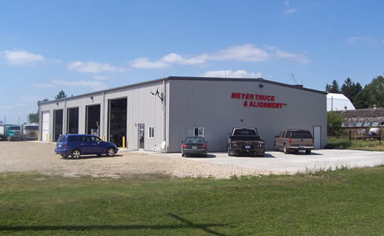

Meyer Truck & Alignment, Inc has been in business since 1991 and our goal has always remained the same:
"Deliver the best truck repair possible at a reasonable price, using the best parts and materials available"
We've been successful due to our honesty and ASE and house certified technicians. We service all makes and models of trucks, tractors, and trailers. Bring in your vehicle today, with confidence that it will be serviced and repaired correctly the first time!
Franklin - Hardin - Cerro Gordo - Butler - Wright
{{ site.content-different[0] }}
{{ site.content-different[1] }}
{{ site.content-history[0] }}
{{ site.content-history[1] }}